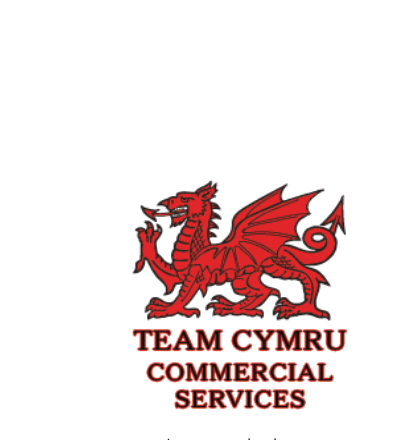
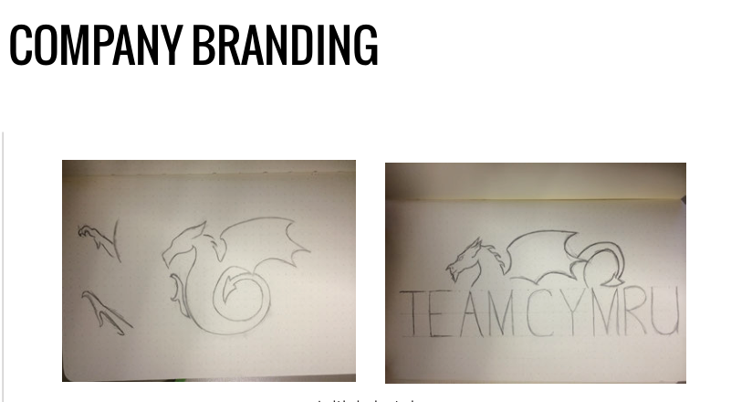
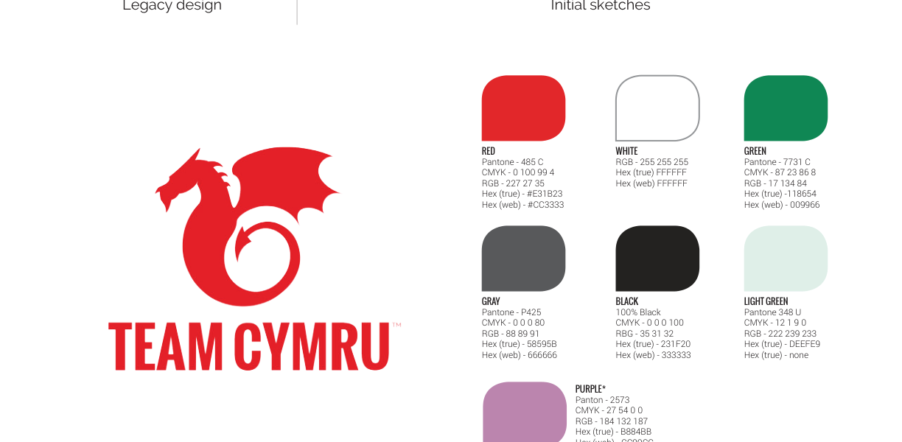
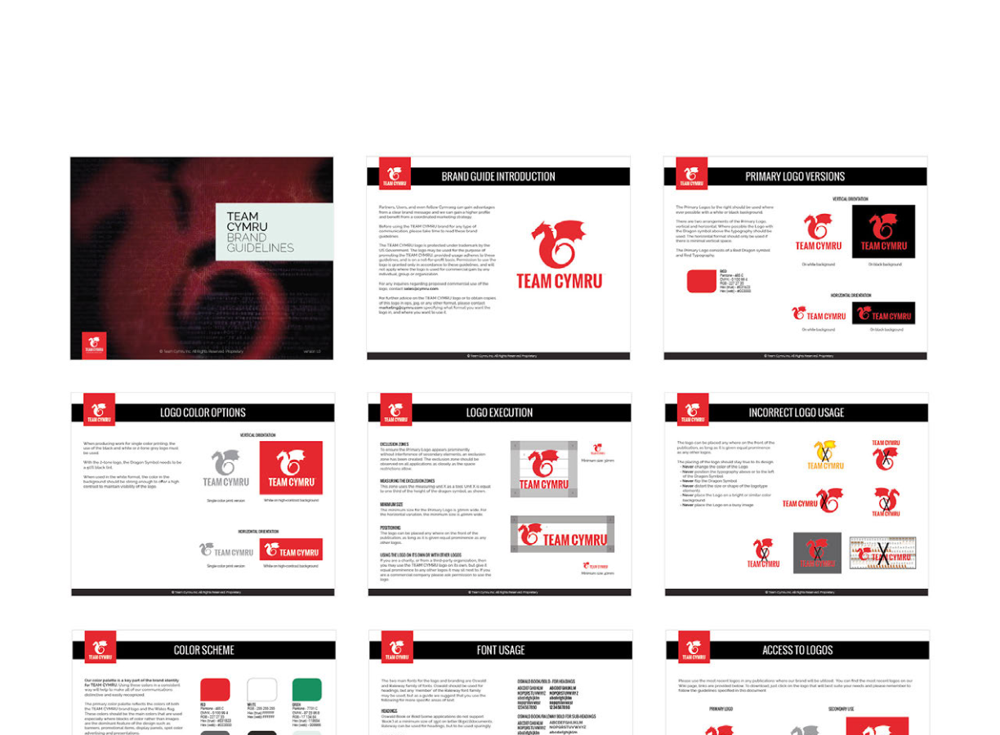
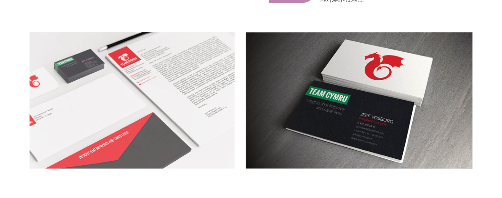
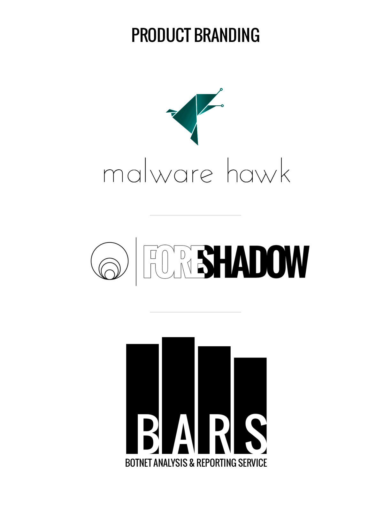
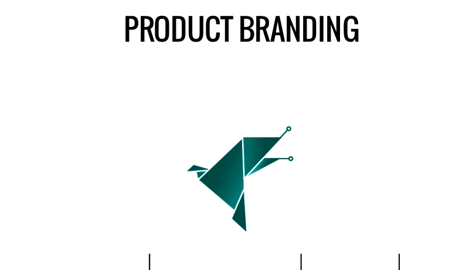
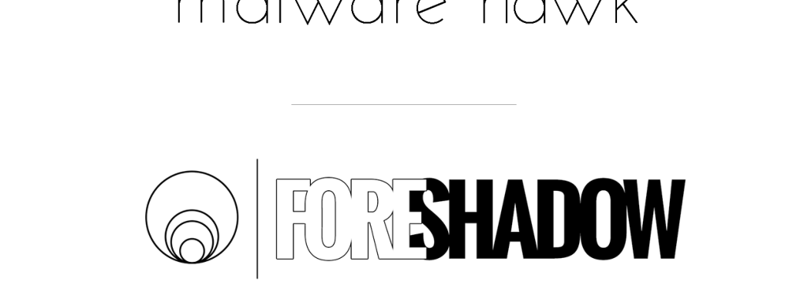
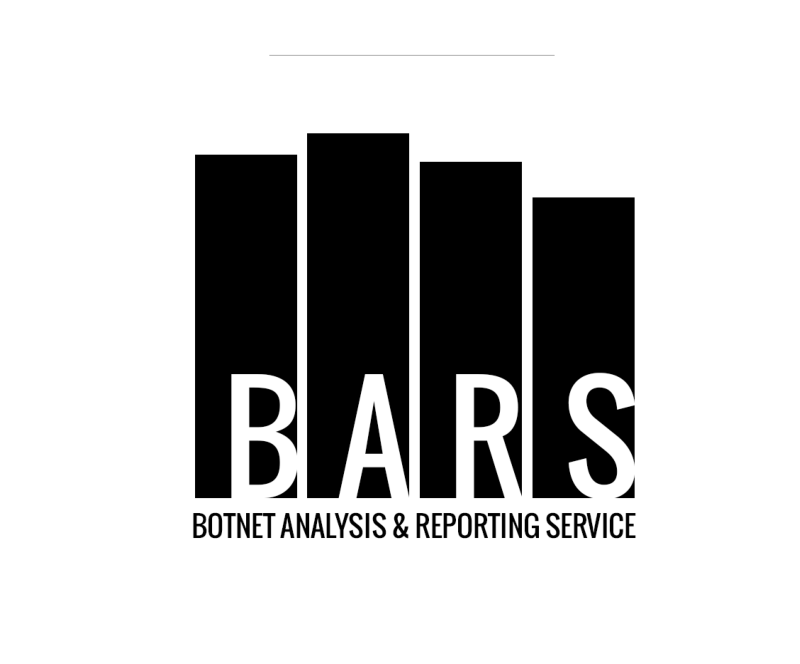

3
Case study
Team Cymru Brand System
The Team Cymru brand had grown into an identity that reflected where the company had been more than where it was going. The heraldic illustration, the "Commercial Services" qualifier in the name, the color system that didn't work at scale — none of it was wrong exactly, just behind. I rebuilt it: new mark, new color system, full guidelines, and a family of product identities.
tl;dr
- The legacy logo worked for its era but didn't scale — too detailed for small sizes, too heraldic for digital contexts, too tied to a company structure that had changed.
- The dragon stayed. It's core to Welsh identity and already recognized in the community. What changed was everything around it.
- A full color system was built from scratch, anchored in the red of the Welsh flag and extended into greens, neutrals, and light backgrounds.
- Brand guidelines were built to be used, not just presented — covering clear space, incorrect usage, color rules, and file formats.
- Three product marks (Malware Hawk, Foreshadow, BARS) were designed as distinct identities that still read as part of the same family.
Company Rebrand
What the Old Logo Was Actually Saying
The legacy mark said "Team Cymru Commercial Services" in a stacked layout with a detailed heraldic red dragon. It had the quality of something that had been designed carefully for a specific moment — a formal, institutional register that made sense when the goal was to signal legitimacy to a particular audience.
The problem wasn't that it was bad. It was that the company had moved past what it was saying. "Commercial Services" as a qualifier no longer fit. The heraldic illustration didn't reproduce cleanly at small sizes or on dark backgrounds. The overall system had no flexibility — it worked at one scale, in one context, and nowhere else.


Keep the Dragon. Lose Everything Else That Wasn't Working.
The first decision was whether to keep the dragon at all. It stayed. The dragon is a specifically Welsh symbol — it's on the national flag, it's embedded in the company's name, and it already meant something to the community. Abandoning it would have been a different kind of mistake.
What changed was the treatment. The sketch phase explored different levels of simplification: how far could the form be reduced before it stopped reading as a dragon? The answer was further than expected. The final mark is geometric and flat — strong as a standalone icon, clean at small sizes, solid on both light and dark backgrounds.
A Color System That Could Actually Travel
The color system was built from scratch with one anchor: the red of the Welsh dragon, which couldn't move for the same reasons the dragon couldn't. From there, the palette extended into a green family (primary and light background tones), a neutral gray, and a near-black for type and dark-mode contexts.
The goal was a system where any combination of two colors would work — on print, on screen, on dark backgrounds, in product UI. A purple accent was added for secondary product contexts where the primary palette needed more range. Each color was specified in Pantone, CMYK, RGB, and hex so that no one had to guess at production time.


Guidelines Built to Be Used, Not Filed Away
A brand standards document only has value if people can actually use it. The Team Cymru guidelines covered the things that matter in production: primary logo versions and their correct usage contexts, clear space requirements, approved background color combinations, incorrect usage examples that showed specifically what to avoid, and file format guidance so the right file ended up in the right place.
The result was a document that could be handed to a new designer, a printer, a developer, or a marketing agency and give them everything they needed to work with the brand correctly — without having to ask.

Product Marks
Three Products, Three Identities, One Family
Team Cymru's product portfolio needed marks that could stand independently while still feeling related to the parent brand and to each other. The challenge with product branding inside a brand family is avoiding two failure modes: marks that look like they belong to completely different companies, and marks that look like the same logo with different colors.
Each product got a distinct visual concept based on what it actually did — a form that expressed the function rather than just illustrating a name.


Malware Hawk: Precision and Speed
Malware Hawk needed to feel related to Griffin — both were detection tools, both lived in the same product family — but distinct enough to have its own identity. The geometric origami bird form solved both problems. The folded planes reference technical precision. The teal connects it to the Griffin color family without repeating the griffin form.
The wordmark is set in a thin, elegant typeface — a deliberate contrast to the geometric mark. That tension between precision-engineered form and refined letterforms read as exactly the kind of product it was.
Foreshadow: Depth and Signal
Foreshadow was a threat intelligence product — something that surfaced signals before problems became visible. The concentric circle mark was a direct expression of that: rings emanating outward, radar-like, suggesting detection at the periphery before anything has reached the center.
The bold typographic treatment for the wordmark — with "FORE" and "SHADOW" in contrasting weights — reinforced the product concept visually. Seeing something before it fully arrives. The overall register was heavier and more serious than Malware Hawk, which was appropriate for what it did.


BARS: Data Made Structural
BARS — the Botnet Analysis and Reporting Service — was the most data-forward of the three products. The mark reflected that directly: bar chart columns integrated into the letterforms themselves, so that the B, A, R, and S are also data visualizations. The product's function is inseparable from how the name looks.
The all-caps treatment and heavy weight gave BARS a different register than Malware Hawk or Foreshadow — blunter, more direct, more operational. All three marks together read as a coherent system precisely because each one followed its own concept rather than following a template.
Outcome
The brand system gave Team Cymru something it hadn't had before: a consistent visual language that could travel across every context the company operated in — print, digital, product UI, enterprise sales materials — without breaking down or requiring creative judgment calls to fill gaps.
The product marks extended that into the portfolio itself. Three products with three distinct identities that still read as a family — which is harder to achieve than it sounds, and more valuable than individual marks would have been.
What the system delivered
- A simplified mark that kept the dragon and dropped everything that wasn't working.
- A color system specified fully in every format, with clear rules for every usage context.
- Brand guidelines built for production use, not for presentations.
- Three product marks that each expressed their function rather than just illustrating their name.
Continue Exploring
Contact
Want to talk through the Team Cymru rebrand?
The rebrand decisions, the product-mark concepts, or how the system was built to hold together across contexts — happy to get into any of it.
A good conversation is usually the best start.